PowerVS Prerequisites
IBM Cloud Account
You'll need to have an IBM Cloud Account to be able to use Power Systems Virtual Server (PowerVS).
Create Power Systems Virtual Server Service Instance
Login to IBM Cloud Dashboard and search for "Power" in the Catalog. Select "Power Systems Virtual Server" and provide all the required inputs to create the service instance.
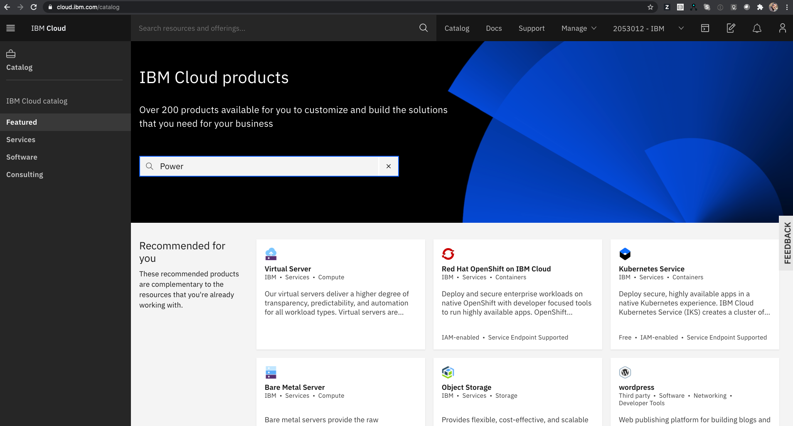
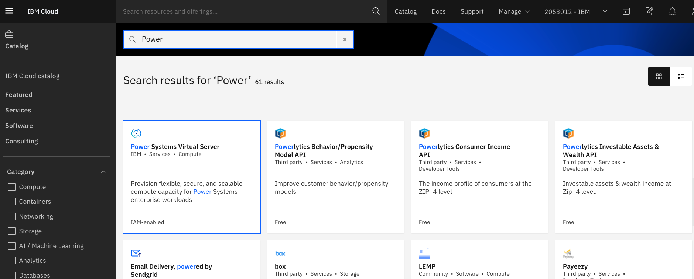
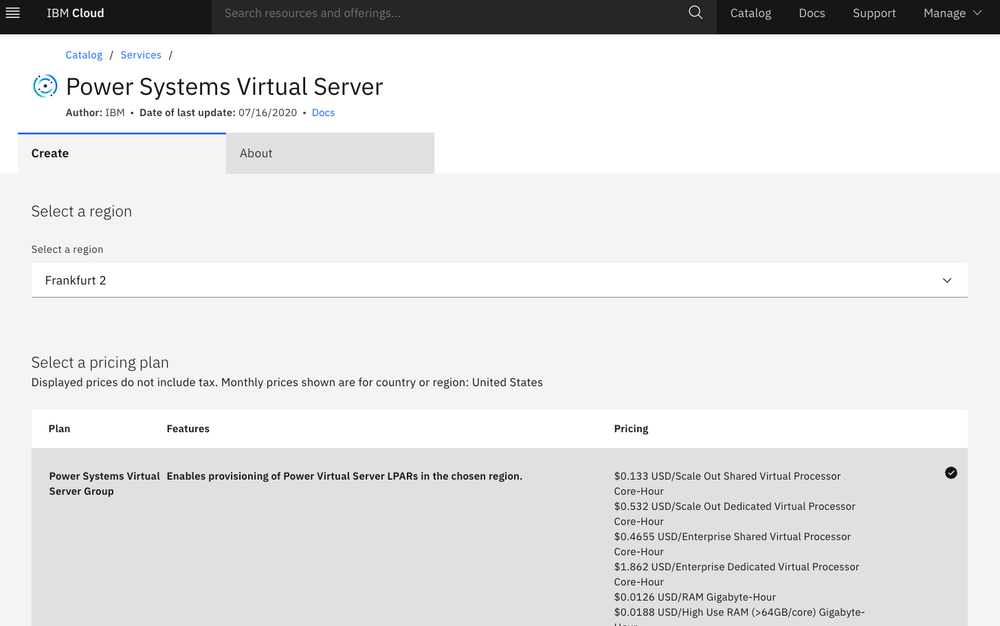 1. Provide a meaningful name for your instance in the Service name field. 2. Select the proper resource group. More details on resource groups is available from the following link
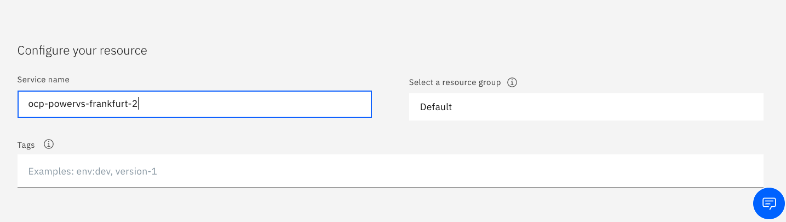
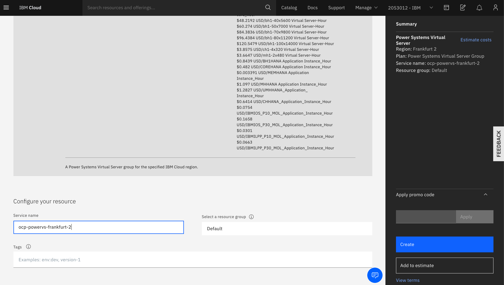
Create Private Network
A private network is required for your OCP cluster. Choose the previously created "Service Instance" and create a private subnet by selecting "Subnets" and providing the required inputs. If you see a screen displaying CRN and GUID, then click "View full details" to access the "Subnet" creation page.
You can create multiple OCP clusters in the same service instance using the same private network. If required you can also create multiple private networks.
Provide the required inputs for private subnet creation
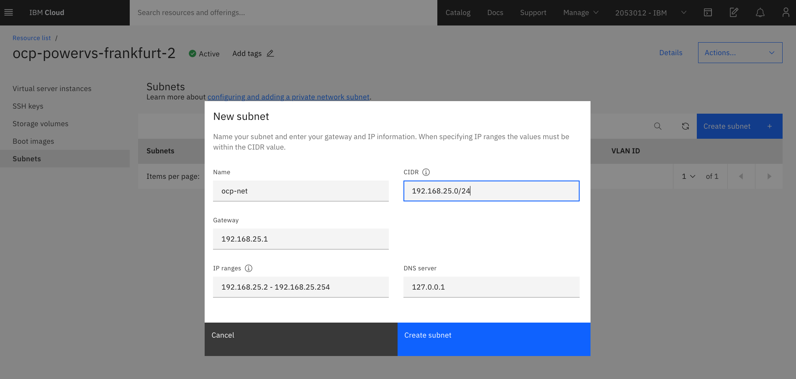
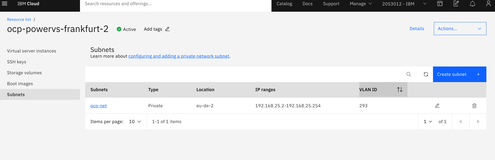
Raise a Service Request to enable IP communication between PowerVS instances on private network
In order for your instances to communicate within the subnet, you'll need to create a service request.
Click on Support in the top bar and scroll down to Contact Support, then select "Create a case"
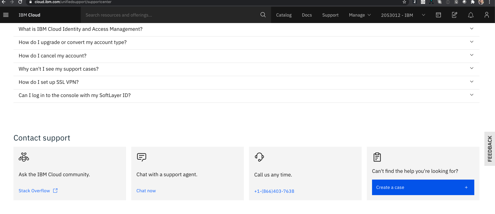
Select "Power Systems Virtual Server" tile
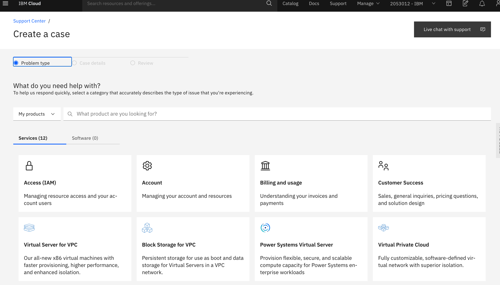
Complete the details as shown using the following template:
- [Subject:] Enable communication between PowerVS instances on private network
- [Body:]
Please enable IP communication between PowerVS instances for the following private network: Name: <your-subnet-name-from-above> Type: Private CIDR: <your ip subnet-from-above> VLAN ID: <your-vlan-id> (listed in your subnet details post-creation) Location: <your-location> (listed in your subnet details post-creation) Service Instance: <your-service-name>
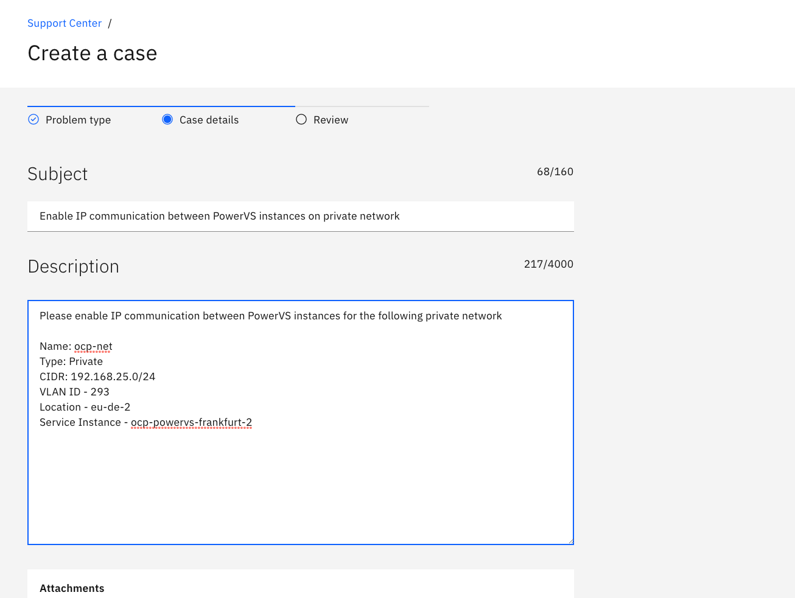
Click "Continue" to accept agreements, and then Click "Submit case".
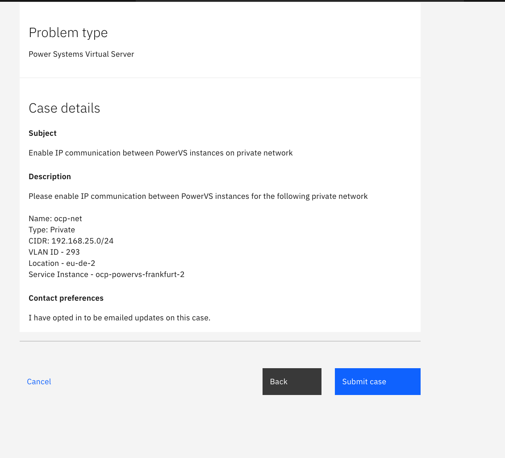
RHCOS and RHEL 8.2 Images for OpenShift
RHEL image is used for bastion and RHCOS is used for the OpenShift cluster nodes.
You'll need to create OVA formatted images for RHEL and RHCOS, upload them to IBM Cloud Object storage and then import these images as boot images in your PowerVS service instance.
Further, the image disk should be minimum of 120 GB in size.
Creating OVA images
- If you have PowerVC then you can follow the instructions provided in the link to export an existing PowerVC image to OVA image.
- You can also use the following python script to convert Qcow2 image to OVA
- RHEL 8.2 Qcow2 image is available from the following link
- RHCOS Qcow2 image is available from the following link
Uploading to IBM Cloud Object Storage
- Create IBM Cloud Object Storage service and bucket
Please refer to the following link for instructions to create IBM Cloud Object Storage service and required storage bucket to upload the OVA images.
- Create secret and access keys with Hash-based Message Authentication Code (HMAC)
Please refer to the following link for instructions to create the keys required for importing the images into your PowerVS service instance.
- Upload the OVA image to Cloud Object storage bucket Please refer to the following link for uploading the OVA image to the respective bucket. Alternatively you can also use the following python script.
Importing the images in PowerVS
Choose the previously created PowerVS "Service Instance", click "View full details" and select "Boot images". Click the "Importing image" option and fill the requisite details like image name, storage type and cloud object storage details.
Example screenshot showing import of RHEL image that is used for bastion 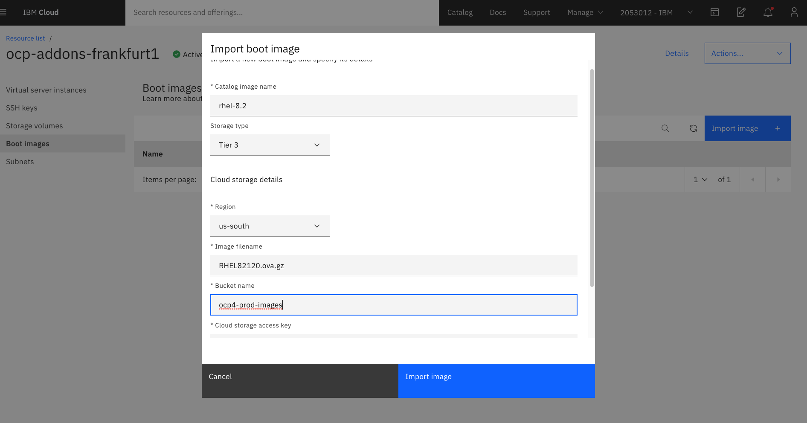
Example screenshot showing import of RHCOS image used for OCP 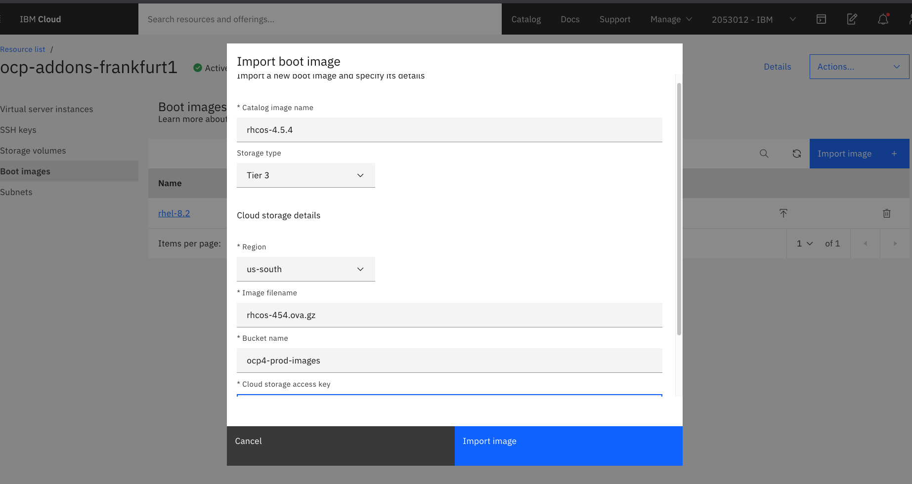
Your PowerVS service instance is now ready for OpenShift clusters.